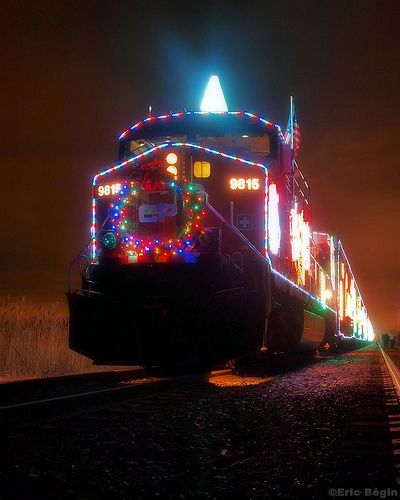

Merry Christmas and a Happy New Year

We wish you a Merry Christmas and a Happy New Year. Enjoy your holidays and of course we hope all the wishes you have will be fulfilled.
We played about 45 games this year on PublicServer (starting with #125) with an average playtime of 8 days per game. That’s amazing. Since I was not so often involved in the games this year, I am very proud on the activity you showed, the organising efforts, the submitted games and your continuous dedication to our community. It doesn’t matter wether you are a member or just usual suspect, all of you made it possible to play and enjoy the games.
This should be a good motivation for 2010, but we should also take care of new players. Our strategies to solve games and knowledge about OpenTTd is getting more complex. We are aware of many rules and have a wide palette of building techniques which are totally unknown to new comers or OpenTTD beginners. Lets keep an eye on these players and show them our love to the game and community.
I know its always hard and we often repeat the same things several times, but please remember everyone started once, ditching into this universe.
I am really looking forward to the new year!
Cheers Coopers,
Osai
Categories: Community News
Mucht December 24, 2009 11:40
Yes, another great year of ‘coop! Given the figures presented by Osai, 2009 was possibly the most active year of our community so far. Although I was hardly able to participate in the community this year, I took notice of many vital projects in and around #openttdcoop. One of my personal wishes for 2010 is that people keep enjoying the game and especially our community as they did in 2009!
Ammler December 25, 2009 00:25
/me also likes to wish you all happy christmas and a merry new year. 🙂
KenjiE20 December 25, 2009 23:07
“ditching into this universe”
I’ll have you know I did not ditch…. I bailed out 😀
Relevant and brilliant;
http://news.bbc.co.uk/1/hi/england/8428097.stm
/me lurks off with a bottle of scotch best
Osai December 26, 2009 00:55
maybe I meant “to plunge” 😀
V453000 December 30, 2009 21:32
A really nice article … I think I love you Osai 😀 😀 😀 😛 anyways … I wish everyone a nice 2010 🙂